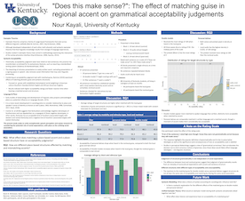

UK Linguistics Graduate Handbook
Revised: Summer 20241
1 Find the most recent revision of this document on the UK Linguistics Graduate Programs page
1 General Information
The Department of Linguistics offers graduate programs leading to the degrees of Master of Arts (MA) and Doctor of Philosophy (PhD). Financial support for graduate students is available in the form of Teaching Assistantships, Journal Fellowships, and Research Assistantships; these are awarded on a competitive basis. Full details of your financial support can be found in the offer letter you received when you were admitted to the program. This handbook contains policies regarding graduate study in the Department of Linguistics2. Additional recommendations and guidance for students can be found on the Linguistics graduate program website: https://linguistics.as.uky.edu/ling-grad-program and in the University-wide Graduate Catalog3 (formerly the “Graduate Bulletin”).
2 When in doubt, consult with the DGS
1.1 UK Policies for Graduate Students and Programs
Students, faculty, and department administrators can obtain information regarding general policies for graduate students and programs from the following sources:
- UK Graduate School Website: https://gradschool.uky.edu/
- UK Graduate School Catalog: http://catalogs.uky.edu/
- UK Graduate School DGS Policies and Procedures Manual: https://gradschool.uky.edu/directors-graduate-studies
1.2 Rights, Responsibilites, and Resources
The Department of Linguistics is dedicated to fostering a healthy, supportive, and inclusive environment for all of its students, staff, and faculty. This section includes references to information and resources students may need during their program.
Student Rights and Responsibilities are found in the Administrative Regulation (AR) 4:10 The Code of Student Conduct. Students are responsible for learning and following the rules and regulations that govern academic life at the University. Students should be informed regarding their academic and non-academic rights and responsibilities, including the UK Code of Student Conduct. For details, students should consult the Dean of Students website and the Ombud website:
- Rights & Responsibilities: https://www.uky.edu/deanofstudents/student-rights-and-responsibilities
- UK Office of the Ombudsman: https://www.uky.edu/ombud/
- Food & Housing Insecurity: https://www.uky.edu/deanofstudents/needs
- Institutional Diversity: https://www.uky.edu/inclusiveexcellence/
- Responding to Harassment & Discrimination: https://www.uky.edu/eeo/discrimination-harassment
- Resources for Mental Health https://www.uky.edu/president/mental_health_resources
1.3 Academic Load
A graduate student enrolled in 9 credit hours or more in a semester is considered to be full time (see the Graduate Catalog for more information). Except under extremely unique circumstances, a student who is a Teaching Assistant (TA) will take 9-10 credit hours per semester.
1.4 Independent Studies
While it is sometimes appropriate to take an independent study course, we ask students to first look for graduate seminars for two reasons. First, seminars with low enrollment may be cancelled. Second, graduate education is about learning beyond the very narrow confines of a thesis or dissertation. Your ability to teach across broad topics and situate your work in the discipline can be crucial in academic job hunting and career success. Your ability to engage deeply and successfully with topics that did not initially interest you can be crucial in a non-academic career.
1.4.1 Parental Leave for Graduate Students
The UK Graduate School has a parental leave policy for graduate students.
1.4.2 Scholastic Probation
Students must maintain a minimum 3.00 GPA specified by the graduate school to avoid being placed on scholastic probation. Students placed on scholastic probation are not eligible for fellowships or tuition scholarships and may not sit for doctoral qualifying or final examinations, or master’s final examinations.
Further information regarding scholastic probation is available in the UK Graduate Catalog.
1.4.3 Summer Teaching
A limited number of teaching positions are available through the Linguistics department each year to teach online versions of either Lin 211 (Introduction to Linguistics) or Lin 200 (How to Create your own Language.) These courses take place virtually, mainly via-Canvas and video resources, and run either during the Summer Session first half (mid-May - early-July) or second half (mid-June - early-August, dates vary annually). The student will be listed as instructor of record.
The A&A committee will assign teaching duties roughly one month before the end of the Spring semester using the following ranked, violable constraints. The guiding principle throughout is to treat this as a professional enrichment opportunity and to prefer distributing that opportunity to as many students as possible.
- *InstructorOfRecord: preference given to students who have not yet had the opportunity to be instructor of record in a course. We know this may feel backwards, but part of the motivation for offering summer courses like these is so that graduate students can have the experience of teaching as the primary instructor of a course and list that experience on their CV.
- LINexperience: people who have not had the opportunity to teach an LIN course will be given preference over people who have. Again, this is about ensuring as many students as possible graduate with LIN teaching experience as a primary instructor.
- TeachingAssessments: Any teaching assessments/feedback from TA coordinator/previous instructors of record.
- Seniority: years remaining in program. Preference will be given to students who will have fewer future chances to be instructor of record in an LIN course.
- GoodStanding: preference given to students who are in good standing and making progress toward their degree.
- Chance: In the event that two or more candidates emerge from this analysis as equally optimal potential instructors, random weights will be assigned to the candidates using a pseudo-random number generator and students will be informed of their status as a potential instructor and their position in that queue.
1.5 Possibilities for Research, Conference, and Institute Funding
1.5.1 Conference Supplemental Funding
Given the yearly variation in both the amount of available funding and student requests for the funds, funding is competitive and not guaranteed. The Graduate School provides the College with limited “Block” funds which our department chooses to use to fund graduate student research and travel. This money is distributed among current students in good standing using an algorithm that provides first-year students with a substantial research and travel budget and divides the remaining funds equally among more advanced students. For the year 2024-2025, for example, this algorithm allotted $2,500 to newly-admitted PhD students and $750 per student to second year MA students. We anticipate, but are unable to guarantee, similar distributions in future years.
 You can find poster and slide template files on the resources page.
1.5.2 Institute (and summer program) Funding
In addition to block funding, the department has a limited pool of Linguistic Institute funds available to sponsor student tuition at future Institutes and similar summer schools. After completing a competitive application for any scholarships or similar student support offered by the Institute or summer school, interested students should apply using the Research and Travel funding request form and simultaneously apply for any fellowship or scholarship funding available through the Institute/Summer school. These applications will be evaluated by the admissions and awards committee. This particular funding is available for tuition only and may not be used for room, board, or travel.
1.5.3 Other sources of Research and Travel Funding
The Graduate Student Congress (GSC) offers competitive conference awards that students are encouraged to apply for. Other departments and programs at UK (e.g. the Appalachian Center) and many professional organizations (including the Linguistic Society of America offer funding that individual students may be eligible for and are encouraged to pursue.
2 MA Program
2.1 Introduction
The Master’s in Linguistics offers training in theoretical frameworks for approaching descriptive and sociolinguistic data with related emphases on historical, corpus, and computational linguistics. In addition to providing preparation for doctoral studies in linguistics, the MA program prepares students for careers in industry, consultancies in law and medicine, jobs in government agencies, etc.
The purpose of the MA degree is to provide students with the knowledge, skills, and experience necessary to conduct independent research. In addition, the MA program is designed to enable students, particularly University Scholars Program (USP) students, to pursue a substantive area of scholarship at a depth not possible at the undergraduate level alone. The MA degree will usually be completed in two academic years by full time students.
The MA degree can also be awarded to students enrolled in the doctoral program who have completed the requirements for candidacy but who will not continue in the doctoral program.
2.2 Advisor and Thesis Committee
MA students are strongly encouraged to identify a potential advisor during their first semester. Once a student and advisor have agreed to work with each other (see section 6.4), this information should be communicated to the DGS in written or email form. A three-member Thesis Committee will generally be convened no later than Fall of the second year for the purpose of guiding the student by reviewing the program of study and guiding the student in the development and completion of an independent research paper topic. In every case, at least two members of the Committee should be Linguistics faculty members. At least one member of the Advisory Committee must hold Full Graduate Faculty status (generally limited to associate and full professors).
2.3 Coursework Requirements
Earning an MA in Linguistics at the University of Kentucky requires the successful completion of 30 total hours of coursework including the following core courses:
- LIN 601 - Qualitative Research Methods in Linguistics
- LIN 701 - Research Seminar in Linguistics
- LIN 512 - Syntax (or a relevant 600-level course)
- LIN 515 - Phonology (or a relevant 600-level course)
- LIN 500 or LIN 505 - Phonetics or Morphology (or a relevant 600-level course)
At least 20 credit hours (7 courses) taken as regular courses (rather than as independent study or research courses).
At least 15 credit hours (5 courses) must be taken at the 600 or 700 level (excluding thesis, practicum, or internship credit)
Only 9 credit hours are transferable (excluding independent work, research, workshops, practica, or thesis work); student must have had graduate status at the time the courses were taken.
2.4 Concurrent Degrees
MA students may choose to pursue a concurrent degree with another program. Some examples include:
- M.A. in Classics
- M.A. in French and Francophone Studies
- M.A. in German
- M.A. in Teaching English as a Second Language
- M.A. in Teaching World Languages
- M.S. in Statistics
- M.S. in Computer Science
- Graduate Certificate in Latin Studies
- Graduate Certificate in Teaching English as a Second Language
Nine credit hours may be shared between the two degrees, with the approval of both Directors of Graduate Studies. Visit the Graduate School web page to find the Concurrent Master Degrees form4
2.5 Completing the MA Thesis Requirement
The backbone of the MA program in linguistics is the thesis which represents a significant, independent research project, conducted with the support of a thesis chair and advising committee. This thesis should respond to a relevant question in Linguistics and, beyond satisfying the requirements for the MA desgree, serves two primary goals: (1) to allow the student to experience independent research and writing of a substantial project to assess their commitment to and interest in continuing as a researcher. (2) to demonstrate to others (e.g. employers, admissions committees, granting agencies) that the student is capable of world-class Linguistics research5.
2.6 Applying to Doctoral Programs
Students in the MA program considering applying to Ph.D. programs in order to continue their graduate education are strongly encouraged to seek their advisor’s advice early in the fall semester of the second year. Faculty advisors can help to identify appropriate Ph.D. programs, whether at the University of Kentucky or elsewhere, and they generally provide the primary reference letter for student applications. To that end, timely work on a thesis proposal, and the thesis itself is critical in order to adequately and accurately demonstrate the student’s potential for academic success at the doctoral level. Successful MA work at the University of Kentucky is not a guarantee of admission to and/or funding in the Ph.D. program as the evaluation processes for MA and Ph.D. applicants carry different evaluative criteria. University of Kentucky MA students applying to the University of Kentucky Ph.D. program are considered for admission and funding as part of the general pool of applicants in any given year.
3 Ph.D. Program
3.1 Introduction
Linguistics is an interdisciplinary field situated at the intersection of the humanities, the social sciences, and the natural sciences. The doctoral program at the University of Kentucky provides degree candidates with the training to pursue individualized programs of research into the comprehensive, systematic, scientific, objective, and precise analysis of the cognitive, social, environmental, biological, and structural components of the human capacity for language. This degree program emphasizes our department’s areas of strength, including: Sociolinguistics, Historical linguistics, and Computational linguistics. At the completion of this program, students will be expected to demonstrate a sophisticated understanding of the principles and methods of linguistic research and analysis as they apply to a range of problems, communicate professionally and effectively both orally and in writing to the standards in the field, demonstrate a sophisticated understanding of situations in which ethical questions arise for which linguistic knowledge can be applied, and demonstrate the ability to explain linguistic concepts to people with varying backgrounds.
3.2 Advisor and Dissertation Committee
Selecting an appropriate advisor is an important decision for any doctoral student. Ideally, the student will form a healthy working relationship with a faculty member whose expertise in the proposed research area is sufficient to offer guidance and mentorshp. This document contains a number of suggestions about selecting an appropriate advisor and managing that relationship including what students can expect from the advisor/advisee relationship and what an advisor can expect from the student. An advisor should ideally be selected by the end of the fourth semester to supervise development of the dissertation prospectus, but this advisor need not serve as chair or reader for the QP project.
3.2.1 Dissertation Committee
The dissertation committee has a core of four members. This core must include a minimum of two faculty members from the graduate program (with one being the major professor as chair or co-chair), and one representative from outside the graduate program. All members of the core must be members of the Graduate Faculty of the University of Kentucky and three (including the major professor) must possess full Graduate Faculty status.
Faculty members from other institutions may serve on dissertation committees if they meet the requirements for appointment as associate members of the UK Graduate Faculty. When faculty members retire or leave the University, they may continue their service on previously established doctoral Advisory Committees but cannot be appointed to new committees. Requests to continue service should be made by the DGS to the Graduate School Dean, and include the names of all students affected.
3.3 Coursework Requirements
Earning a PhD in Linguistics at the University of Kentucky requires the successful completion of 36 total hours of coursework including the following core courses:
3.3.1 Required courses (6 hours)
- LIN 601 - Qualitative Research Methods in Linguistics
- LIN 611 - Quantitative Research Methods in Linguistics
3.3.2 Core courses (6 hours)
- LIN 500/600 or LIN 515/615 - One course in Phonetics or Phonology
- LIN 505/605 or LIN 512/622 - One course in Morphology or Syntax
3.3.3 Disciplinary Breadth Courses (9 hours)
- Historical Linguistics (1 course from LIN 519, LIN 529, LIN 619, LIN 629, or an approved LIN 517 or LIN 527)
- Sociolinguistics (1 course from LIN 506, LIN 507, LIN 508, LIN 606, LIN 619, or an approved LIN 517 or LIN 527)
- Corpus and Computational linguistics (1 course from LIN 510, LIN 511, LIN 610, or an approved LIN 517)
3.3.4 Advanced Courses in Area of Concentration (9 hours)
Students must take three LIN courses at the 600 level or above in their area of concentration. These courses will be selected in collaboration with the student’s advisor and/or the DGS.
3.3.5 Other Electives (6 hours)
Graduate school regulations specify that half of all courses toward the degree must be at the 600 level or above. Ordinarily these will be LIN courses but students may substitute courses in other programs with approval of the student’s advisor and/or the DGS. It is recommended that students use this category to gain additional experience in areas beyond their area of concentration for breadth of exposure.
3.4 Concurrent Degrees
Many students earn a Masters degree in a related field while pursuing doctoral study and the graduate school makes allowances for this. The student must complete the “Concurrent Masters and Doctoral Programs”6 form available on the graduate school website. This form requires signatures from the student and from the DGS of each host program. A maximum of 9 credit hours can be shared between the two programs.
Although not expressly forbidden, the graduate school does not make explicit allowances for dual concurrent PhD programs and such a program would need to be designed exceedingly carefully in consultation with the DGS or an advisor from both of the host programs.
3.5 Advancing to Candidacy: The Qualifying Paper (QP)
3.5.1 Timeline
A student advances to candidacy when the following conditions have been met:
- Successful completion of at least 36 graduate credit hours with a 3.00 or higher GPA
- Successful completion of all course requirements as listed above
- Successful completion and examination of the Qualifying Paper
Students are expected by both the Graduate School and the Department of Linguistics to advance to candidacy by the end of their 5th semester (usually the middle of the third year). Failure to advance to candidacy by then will normally result in not being in good standing. Exceptions may be granted upon request, at the discretion of the DGS and in consultation with the student’s advisor(s).
To advance to candidacy the student must pass the graduate school’s requirement for a qualifying examination by submitting a substantial qualifying paper (QP). The graduate school requires that you must complete the equivalent of two years of residency (four semesters or 36 graduate credit hours) to be eligible to defend your QP. As stated above, submission at the end of the fifth or, with an exception, during the sixth semester is expected, but no student of the University of Kentucky Graduate School may satisfy this requirement after the tenth semester of study.
3.5.2 Description of the Qualifying Paper (QP)
The QP, which represents a significant, independent research project, is written in addition to any other papers completed as part of course work and is planned in consultation with a faculty member. It may be a substantially expanded or elaborated version of a course paper or an entirely separate project. The paper should show the student’s ability to pose a linguistic question within a framework of current linguistic research, collect and marshal empirical evidence that bears on that question, and present the results in a way that communicates successfully to other linguists. It is expected to be of sufficient scope and quality that it would be generally acceptable as a conference presentation or journal publication in the field.
3.5.3 Assessment and Defense
The QP is assessed by two faculty readers versed in the topic area of the paper, usually one serving as the primary advisor, and is normally presented at a public defense.
A majority vote is required to pass this examination. If the committee vote is a tie, the candidate fails. If the result is failure, the advisory committee determines the conditions to be met before another examination may be given. The minimum time between examinations is four months. A second examination must be taken within one year after taking the first examination; a third examination is not permitted. If a student fails the qualifying examination on the first attempt, the Advisory Committee can not be changed prior to re-examination without approval of the Dean of the Graduate School. Students are admitted to candidacy for the doctoral degree after they have successfully completed the Qualifying Examination; the date is noted on the student’s transcript.
3.6 Dissertation Prospectus
The principal goal of the prospectus is to communicate clearly to the dissertation committee the background to the proposed dissertation research, and its goals, scope and methods. It usually begins with a discussion of the central issue or problem, interwoven with a critical review of the scholarship to date in the area. The prospectus should include an outline of data collection procedures and other methodological issues, as well as a demonstration — usually via some preliminary analysis — that the proposed study will be able to deliver answers to the research questions.
The prospectus is prepared in consultation with members of the dissertation committee. Students consult with their advisor in identifying faculty who might be approached as suitable committee members. The draft prospectus is discussed in a meeting involving at least 3 dissertation committee members (ideally, the full committee) so that faculty have a clear and common understanding of the student’s plans, so that they can offer their advice and suggestions, and so that the student can defend the prospectus. An approved prospectus, signed by all members of the committee, is filed with the Department. The prospectus must be defended by the end of the 8th semester
3.7 Dissertation Defense
Upon completion of the research and writing of the dissertation, each student will be expected to defend their work. This defense is typically public and all members of the Department are invited to attend. More junior graduate students should make an effort to attend every doctoral thesis defense, even those outside their own research area, to benefit from others’ experiences.
The student is expected to circulate a complete defense draft of the final thesis to all committee members no later than two weeks (10 working days) prior to the scheduled defense. After a successful defense, the student will receive feedback from all committee members which will typically include a number of required and optional changes. These changes will be reviewed by the student’s advisor and, in many cases, the committee member prior to submission of the final draft to the graduate school for review.
All members of a student’s graduate committee are expected to attend and participate in any oral examination as part of the student’s doctoral degree program. Traditionally, oral examinations are conducted with the student meeting with their committee while gathered in one physical location on campus. However, the need occasionally arises for virtual participation in the oral examination, and the DGS can assist in obtaining the necessary graduate school permissions for virtual participation in the dissertation defense.
3.8 Completing the Doctoral Thesis Requirements
The dissertation is a substantial piece of work that presents and analyzes original research results, and motivates the research and interprets the results within an appropriate framework. The dissertation is supervised by a dissertation committee consisting of at least 4 members, at least 2 of whom are in the Department of Linguistics and at least 1 Graduate Faculty member from another Department. The dissertation is examined at a public oral defense. It is expected that the Dissertation be defended before the end of the 10th semester.
4 Departmental Citizenship
The ability to maintain professional working relationships with colleagues, even with those whose theoretical, political, or social views we disagree with, is a crucial skill in both academic and non-academic careers. Our community values professionalism among and towards staff, students, faculty, and fellow graduate students. Maintaining these kinds of relationships becomes more difficult when language or behavior used in professional settings that degrades, isolates, or threatens the identities or existence of our colleagues who share that space. Behavior that marginalizes or that exploits power imbalances for the benefit of the more powerful undermines community and limits the full potential of the marginalized or disempowered community member. As linguists, we recognize that names, and words, can be just as damaging, if not moreso, than sticks and stones. Verbal and physical aggression in professional spaces will not be tolerated; members of this intellectual community are expected to be respectful and mindful of others’ feelings, beliefs, and identities and to maintain a cooperative environment as much as possible, despite personality conflicts. Violations of this web of respect should be brought to the attention of the DGS and/or Department Chair swiftly and will be addressed thoughtfully and transparently.
For clarity, the following rules (from AR 7.2.1) govern Faculty behavior in a professional environment and our department officially extends these as guidelines for Staff and Graduate Students as well.
- Respect the rights of all campus members to pursue their academic and administrative activities.
- Respect the rights of all campus members to free and orderly expression.
- Act with propriety in all dealings with members of the University community.
Harassment and discrimination, including sexual or gender harassment and discrimination, will not be tolerated. Unwelcome sexual advances, requests for sexual favors, deadnaming, or other verbal or physical actions that restrict, intentionally or otherwise, the rights of a colleague to pursue their academic and administrative activities will not be tolerated (see AR 7.2 for additional details). Additionally, romantic relationships with any of your students or professors are not welcome in this community. The power imbalance implicit in such relationships makes consent difficult, if not impossible, and cannot be endorsed in a healthy professional environment. Relationships among peers are, of course, possible.
5 Doctoral and Masters Advising
The Department of Linguistics is committed to facilitating close collaboration between faculty and students with shared areas of interest. At the outset of their program, students will be advised by the Director of Graduate Studies (DGS) about course registration, progress through the program, and other general concerns. Once a student has chosen a thesis topic (or area of concentration), they will ask a faculty member to chair their thesis committee. The DGS and thesis committee chair will then be the major points of contact for program and thesis advice and advising. The advisor/advisee relationship is a critical component of student success, and it is important to recognize that people have different relationship styles and that there is a diversity of models for what this professional relationship should be (see below, “Choosing an Advisor” and following).
5.1 Introduction: Your academic advisor
Who is your “advisor”?
Until you form a committee and choose an advisor–something that typically happens in your second year–the Director of Graduate Studies (DGS) serves as your academic advisor.
After you have recruited a thesis/dissertation advising committee, the chair of your committee officially becomes your academic advisor.
In practice, this means that for the initial semesters of the program, students typically work mainly with the DGS. The DGS helps ensure that you are satisfying degree requirements and helps you navigate coursework, assistantships, identifying funding sources, etc.
As you form relationships with faculty members who are likely to serve on your dissertation committee, there is a natural transition that takes place, with more guidance coming from those faculty members. However, the DGS always remains available as a resource for students at any stage of the program.
Be aware that most faculty appointments, as well as administrative appointments like DGS, are nine-month appointments. This means that, technically, the DGS and your dissertation advisor, are not `on the clock’ over the summer and may be less available.
Despite this, faculty members, including the DGS, are usually able and willing to stay in contact electronically over the summer, even if it may sometimes take longer to hear back. It is always ok to send a follow-up email. If your advisor is going to be fully out of contact for an extended period—even over the summer–it is reasonable to expect that they let you know ahead of time.
The requirements for your degree program, and procedures for satisfying those requirements, are outlined in two documents: this document and the Graduate School’s Graduate Catalog7.
You should take time to read over both of these documents.
This UK Linguistics Graduate Handbook describes the requirements of the Linguistic Department’s MA & PhD programs specifically–including coursework requirements, the definition of “adequate progress,” and other program requirements such as the MA Thesis or the PhD Qualifying Exam, Dissertation Proposal, and Final Defense.
The Graduate Catalog describes Graduate School-wide requirements, including those that overlap with topics covered here, but also extending to policies such as “add/drop” requirements for courses, residency requirements, moonlighting regulations, time-to-degree limits, and so on.
5.2 Advising expectations during coursework
5.3 Introduction: Your Director of Graduate Studies (DGS)
The Director of Graduate Studies (DGS) is the local representative of the Linguistics department graduate degree programs to the University of Kentucky graduate school. The DGS is responsible for the recruitment, admission, advising, and examining of students in the program. The DGS is a member of the Linguistics faculty who has been appointed by the Dean of the Graduate School after consultation with Linguistics graduate faculty. The standard term for a DGS is typically three years.
The DGS is responsible for the administration of the graduate program, including maintenance of records, administration of graduate program funds, admission of graduate students, fellowships, program requirement changes and new programs, advising and registration, appointment of advisory and examination committees, and other degree requirements related to the graduate program. Additionally, the DGS serves as the focal point for dissemination of information from the Graduate School.
The DGS serves as program advisor to each student until the student has a thesis or dissertation advisor.
5.3.1 Expectations and relationship with the DGS
The DGS serves as the conduit between graduate students and the larger department and university communities. They will advise graduate students on degree progress, thesis and defense requirements, and will send out regular reminders about all important deadlines (applying for graduation, scheduling thesis defense, thesis submission, etc.) as well as advising emails with details about upcoming courses and course registration. The DGS will keep graduate students informed of events (e.g. speakers, workshops, conferences, etc.) that may be of interest.
5.3.2 The DGS is expected to:
- Be aware of students’ course choices
- Be mindful of departmental and Graduate School deadlines
- Monitor GPAs, and other indicators of student performance
The DGS performs the following duties related to the completion of the MA thesis:
- Reviews and approve MA thesis submission forms - Reviews and approve MA exam sheets for thesis defenses - Approves all scheduled defenses and committee membership - Writes justifications for and make requests to the Graduate School for any non-UK committee members on MA committees
5.3.3 With respect to the DGS, Students are expected to:
- Read their UK emails and respond when appropriate
- Inform the DGS of the courses the student plans to enroll in and keep the DGS informed of progress or problems
- Learn and comply with departmental and Graduate School deadlines and regulations
5.3.4 Expectations about and relationship with the MA thesis committee chair
In order to ensure a successful relationship, the department suggests that students discuss the following points when identifying a potential chair:
- The student’s personal timeline and the timing of committee formation and other program milestones
- The advisor’s preferred communication method and frequency
- The expected supervisory model or style
Students might consider asking:
- How quickly does your advisor respond to written submissions turned in on time?
- How quickly does your advisor respond to requests to schedule meetings or conversations?
- How regularly does your advisor like to meet?
- How often would your advisor like a written report of your progress along degree milestones? What format should this report take?
5.4 Once an MA thesis committee chair has been chosen, both student and chair should remain mindful of the following.
5.4.1 Thesis chairs are expected to:
- Maintain regular communication with advisees
- Ensure that advisees are formally supported in their work (either by themselves or another faculty member) when the advisor is on sabbatical or research leave
- Provide timely, substantive feedback on work submitted by advisees
- Encourage and help advisees identify opportunities to participate in the larger professional community, e.g. conference presentations, workshop participation, grant/fellowship funding, publication opportunities, etc.
- Mentor students about professional norms and provide guidance as they pursue the next stage of their education/training or enter the professional workforce
5.4.2 MA Students are expected to:
- Initiate regular communication with their advisor
- Work with their advisor to create an agreed upon timeline for reaching thesis milestones and maintain timely progress toward completion of the thesis
- In consultation with advisor, determine and facilitate the meaningful participation of the other thesis committee members to ensure optimal progress in preparation of the thesis
- Consult with their advisor about how to best prepare their professional future, whether in academia or another sector, by participating in professional meetings or other appropriate forums and networking opportunities
If students have concerns about the advising they are receiving they should arrange to speak confidentially with the Director of Graduate Studies or the Department Chair. The department faculty want to support graduate students and will take their concerns seriously. Students may also seek out the guidance of the Academic Ombud Services. Any student, after due consideration and consultation with the DGS, and with the agreement of the identified faculty, may change thesis committee chair or committee members at any point prior to their thesis defense.
5.5 Advising expectations
5.5.1 What the DGS can expect from the student
Graduate students in the coursework phase of their program should:
- Maintain familiarity with both the Grad Regs and the Bulletin.
- Maintain a courteous, professional relationship with Linguistics Department Manager, Katia Davis, who makes everything work around here.
- Research answers to administrative questions in the Graduate Handbook and Catalog first, before reaching out for clarification.
- Think strategically about their choice of classes, so as to satisfy the course requirements efficiently.
- Take a range of classes from a wide range of faculty, so as to maximize options and flexibility when putting together a committee.
- Meet with the DGS on a regular basis (ideally, at least once per semester) to discuss course selections, program requirements, and concerns.
- Reach out to the DGS as they approach the end of coursework, to discuss the transition to candidacy.
- Be familiar with the Graduate School “Student Forms” page8.
5.5.2 What the student can expect from their DGS
The DGS, in their capacity as academic advisor to early-program graduate students, should:
- Meet with all incoming first-year graduate students before the start of the Fall semester to go over program requirements for the program.
- Ensure that all incoming graduate students have copies of both the Graduate Handbook and the Graduate Catalog.
- Be available to meet with graduate students during the school year to discuss coursework or other program requirements.
- Reach out to students as they near the end of coursework, to ensure that the transition to candidacy goes smoothly.
- Respond in a clear and timely way to requests for clarification about regulations or requirements. As a baseline, one week is a reasonable expectation for a reply to an email.
- Conduct ongoing review meetings with students and provide annual, written feedback and assessment of each student’s progress toward the degree.
5.5.3 What the advisor can expect from the student
Graduate students in the thesis work and candidacy stages of the program should:
- Discuss advising styles and expectations with their dissertation advisor when they first begin working together.
- Maintain regular contact with their advisor, whether things are going well or poorly.
- Keep the advisor apprised of personal or professional developments that may affect the project or time to degree.
- Consult with the advisor before submitting work to conferences, workshops, or publication to receive mentorship and guidance.
- Follow up on written work that the advisee has submitted but not received feedback on. The advisee should check in with the advisor if they have not received feedback on written work within three to four weeks. (Or less, if there is a deadline looming.) Sending a polite reminder in these situations is not pushy, rude, or disrespectful. It’s completely polite and welcome.
- Request a meeting with the advisor to discuss any issues or concerns with the advising relationship.
- Maintain regular contact with other members of the committee and the DGS, keeping them up to date on the status of the project. At a bare minimum, updates should be provided to other committee members once per semester, even if the advisee is not working closely with those members.
5.5.4 What the student can expect from the advisor
A student’s advisor should:
- Discuss advising styles and expectations with advisee when they first begin working together.
- Work with the advisee to set clear expectations regarding the nature and scope of the dissertation topic.
- Be prepared to meet on a regular basis, even when there is not new writing to review.
- Set clear and reasonable expectations regarding the pace of research and writing: e.g. research design timelines, how much will be written, how often new work will be submitted for feedback, and the overall project timeline.
- Respond to emails in a timely manner. As a baseline, one week is a reasonable expectation for a reply to an email.
- Provide feedback on written work within a reasonable timeframe. As a baseline–and when there is not a specific deadline looming–three to four weeks is a reasonable expectation for feedback on written work.
- Encourage the advisee to stay in regular contact with their other committee members.
- Have at least a basic understanding of the program requirements described in the Graduate Handbook, so that deadlines and decisions do not sneak up on either advisee or advisor.
- Keep the advisee apprised of personal or professional developments that may affect the advisor’s ability to provide guidance on the project.
- Reach out to the student in a timely manner with concerns about the project.
- Provide mentorship on academic and professional topics–conference and journal submissions, networking, the academic job market, etc. If the advisor is not inclined to provide professionalization mentorship, they should work with the student to find another faculty member who is. – Be prepared to address issues in the advisor/advisee relationship with honesty, empathy, and candor. – Be clear, candid, and explicit in their communication with the advisee. The advisor should not assume that the advisee is picking up on unspoken social or professional cues, as degrees of familiarity with unwritten academic convention and etiquette vary widely, and not always in obvious ways.
5.6 Choosing an advisor
5.6.1 What to ask a potential advisor
When you meet with a faculty member to discuss their serving as your advisor, you should be sure that their advising style is compatible with your needs.
Here are some questions you might consider asking a potential advisor. There is a range of acceptable answers to all of these questions. But understanding how your advisor would answer these questions can help both of you determine whether it’s a good fit.
- How often do you typically meet with your advisees? Do you like to set up regular meetings, or make appointments on an ad hoc basis?
- How quickly are you typically able to get written work back to your advisees with feedback?
- Do you expect your advisees to work closely with other members of their committee, or do your advisees tend to work mainly with you?
- Have you had advisees whose linguistic views ended up differing in major ways from your own? How would you perceive a situation like that: Completely normal, and even a good thing? Acceptable, but less than optimal? Or perhaps as a sign that the advising relationship was not the right fit after all?
- If you haven’t heard from an advisee for a while, do you tend to reach out to them? Or do you expect them to take the initiative in most situations?
- How familiar are you with the ins and outs of the Linguistics Graduate Handbook and the Graduate Catalog? Do you typically keep your advisees apprised of upcoming milestones, requirements, and deadlines, or do you expect them to understand and monitor those things on their own?
- Understanding that it depends on the student/project, would you describe your typical style of advising as fitting into any of the categories in the Advising Chart (section 6.4.2)?
- Is there anything else you think I should be aware of when it comes to the possibility of working with you as an advisor?
5.6.2 Different kinds of advising relationships
The examples in the following table, adapted from Davis (2005), are borrowed from the UK Philosophy & Mathematics graduate handbooks. It is important to remember that every advisor/advisee/project relationship is different and that an advisor who is a hands-on expert on one project may provide more general guidance on another. Perhaps the most useful aspect of having these styles enumerated like this is that it enables everyone involved to approach the advising relationship more consciously and deliberately.
| Style | Advisor Persona | Student Persona |
|---|---|---|
| Strong master/apprentice style | Advisor is research director. Advisor has a well specified domain of expertise and set of problems within it. | Student is an apprentice working for the advisor. Student works on advisor’s problems. |
| Collegial master/apprentice style | Advisor is expert who limits advising to problems that are within scope of his or her research skill set, but will work on student’s problem. | Student develops a problem within advisor’s domain and skills, and works under the advisor to develop the research plan and procedures. |
| Collegial development style | Advisor is senior colleague who will respond to student research problem and extend his or her advising domain to include new problems and new skills. | Student takes initiative to introduce new problem that requires new skill set and works as a junior colleague with advisor in joint development of new domain. |
| Guidance and suggestion style | Advisor is a senior colleague who gives good general guidance over a wide range of problems and methods but does not have personal skill in all of them. | Student is an independent, junior colleague who takes initiative for presenting problems and research plans for discussion and guidance. Student develops required skills. |
| Passive hands-off style | Advisor has quality control role and responds only to requests or documents, and performs only general quality control review. | Student is an independent researcher who takes initiative for developing problem, developing skills, and presenting research plans for general review and approval. |
5.7 Procedures for resolving issues
Expectation management and clear communication are the most important preventative measures for avoiding advisor/advisee relationship issues (Whitehouse 2020). But issues do arise and they are not always resolvable purely between advisor and advisee. In those cases, the following steps can be followed.
The order in which these steps are presented is, in most cases, the best order to follow. However, you can always skip a particular step if you do not feel comfortable discussing the issue with that party.
- Request a meeting with other members of your dissertation committee. Communicate the problem to them, and ask for information and advice on an informal basis.
- If that doesn’t help (enough), or if you are uncomfortable going to the other members of your dissertation committee, request a meeting with the DGS. They can give advice and clarify relevant regulations from the Handbook or the Graduate Catalog The DGS can also act as your advocate—reaching out on your behalf to other faculty members, the Chair, the Dean, or any other relevant parties.
- If that doesn’t help (enough), or if you are uncomfortable going to the DGS, request a meeting with the Department Chair. Describe the issue to the Chair, and tell them what other steps have been attempted so far. The Chair is likely to be able to help, and may have institutional information or authority that goes beyond what the DGS can offer.
- If that doesn’t help (enough), or if you are uncomfortable going to the Chair, request a meeting with the College of A&S Associate Dean of Graduate Studies. Currently, the Dean of Graduate Studies is Professor Mark Meier. You can check the “Dean’s Office” page at the College of A&S website9 for information on how to schedule an appointment. Scroll down until you find the Associate Dean of Graduate Studies.
- If none of these other steps help (enough), or if your issue precludes going through the usual procedures, contact UK Academic Ombud Services10. As stated on their website, “At the University of Kentucky, Academic Ombud Services is responsible for resolving academic related problems and conflicts between students and faculty for which established procedures have not yielded a satisfactory solution or for which no established procedure exists.”
6 How do I find a research topic?
Early on in an MA or PhD program in linguistics it is common for students to wonder where on earth research ideas come from. Don’t panic. Nearly everyone who has gone before you has felt this; you’re not alone.
Unfortunately, the answer is probably frustrating: read things. Read widely, read critically, and take notes11. You don’t need to think a thought no one has ever thought before; you just have to think about it differently. In fact, many (if not most) successful projects begin with a replication and extension of previous work of some kind. An excellent place to develop a research topic is to build on a successful term paper from one of your classes; these papers let you start small and get feedback right away.
11 MA student, John Winstead has created a fantastic list of software and resources for linguists working at UK. https://linguistics.as.uky.edu/linguistics-resources
A slightly less frustrating answer is: talk to people and listen to people. Talk with your advisor and committee members. Discuss readings with your peers. Attend departmental colloquia and LGSA talks. Eventually you’ll probably find that the real problem is how to find time to pursue all of your good research project ideas.
8 Employment
Whether you are interested in pursuing a non-academic career that draws on your linguistic expertise or want to think about postdocs, lecturer positions, and the tenure track,
- Linguistics Career Launch12 is a program from the LSA intended to help prepare linguists for careers beyond academia. The youtube videos on the site are a particularly good resource.
- Will Styler maintains an excellent ‘jobs’ page with advice aimed at degree holders of all levels wondering interested in non-academic and academic jobs. https://wstyler.ucsd.edu/jobs/
- The linguist list https://linguistlist.org is an old-school e-mail list13 with job postings and much more.
13 for those who are not interested in more e-mail, there are also RSS feeds available: https://linguistlist.org/rss/
9 The Linguistic Graduate Student Association (LGSA)
The purpose of the Linguistic Graduate Student Association (LGSA) is to enhance the social, networking, outreach, and professional development experiences of graduate students in linguistics and the language sciences. This includes, but is not limited to, promoting linguistics related activities, facilitating mentoring opportunities, undertaking communications with linguistics faculty, increasing awareness of and advocating for linguistics related issues on campus at the University of Kentucky.
Outside of sending a representative to the Graduate Student Congress, how the Linguistics Graduate Student Association realizes the aforementioned goals is variable and dependent on the wants and needs of the membership. However, some examples of things that the LGSA has done are:
Organized and participated in a graduate-student led linguistics conference in the spring semester, with conference invitations extended to Linguistics graduate students at Indiana University and The Ohio State University, graduate students in Linguistics, and graduate students in language-related fields at the University of Kentucky
Hosted a bi-weekly reading group within the department to give students a chance to discuss papers outside of the scope of their coursework or research and occasionally welcomed the authors of the papers as a guest in the virtual reading group
Arranged a virtual summer colloquium series which focused on giving early career scholars and other graduate students outside of the department to present their work to the department while keeping the department engaged over the summer
10 Program Checklists
10.1 MA Checklist
14 myUK.uky.edu -> Student Services -> myRecords -> Apply for Degree
15 Note: oral exam can not be scheduled with outstanding Incompletes (“I” grades) on your transcript.
10.2 Ph.D. Checklist
18 see Graduate School Key Dates gradschool.uky.edu/key-dates page.
19 (myUK.uky.edu -> Student Services -> myRecords -> Apply for Degree)